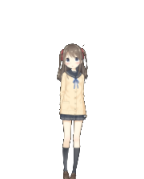

Desktop Companion is a standalone Live2D buddy for Windows. Highlight text in any app — Teams, browsers, Word — and a 🌸 appears: translate instantly, draft a reply, or save it as a task. Powered by your own Claude or Gemini key.
Free & open-source · v0.1.0 · NSIS & MSI installers on Releases — or build from source: git clone … && npm install && npm run dev

A cute companion on your screen that quietly does the boring language work for you.
Select text in any app → click the flower for an instant translation, or hold for the full panel.
Type your reply in Vietnamese; the AI writes a natural answer in the message's language (EN / JA / …).
Turn any selection into a TODO and manage it in the Tasks window — survives restarts.
Preset translation contexts (e.g. "formal work chat") so the tone always fits.
The model's eyes follow your mouse when it's nearby — a living desk companion.
Drag anywhere; Ctrl + wheel to scale. Always-on-top, transparent, frameless.
Load your own *.model3.json models from any folder you downloaded.
Interaction SFX (poke / headpat) in Japanese, Vietnamese or English.
Rebind the capture shortcut to anything you like (default Ctrl+Shift+Space).
From highlighted text to a polished translation or reply in seconds.
Highlight text in any app — chat, browser, document.
A flower pops up next to your cursor automatically.
Click = instant translate. Hold = translate / reply / save task.
Copy the result, or send your AI-drafted reply. Done.
Highlight the message you need to answer, type your point in Vietnamese, and Companion drafts a natural, work-appropriate reply in the message's language — not a word-for-word translation.
Ships with four sample models — but you can load any Live2D Cubism 4 model you downloaded. Just point Companion at the folder and it appears in the Appearance menu.
Bring your own API key from Anthropic or Google. Companion fetches the live model list so you always pick the latest — and your key stays on your machine.
No account, no telemetry. Your settings, tasks and API key live locally.
Settings & tasks are plain JSON in your app config folder — yours to inspect or back up.
Calls go directly from your machine to Anthropic / Google with the key you provide. No middle server.
Built on Tauri 2 — a ~33 MB installer and ~45 MB RAM, starting with Windows.
Free and open-source. Download the installer, add your API key, and start translating in seconds.